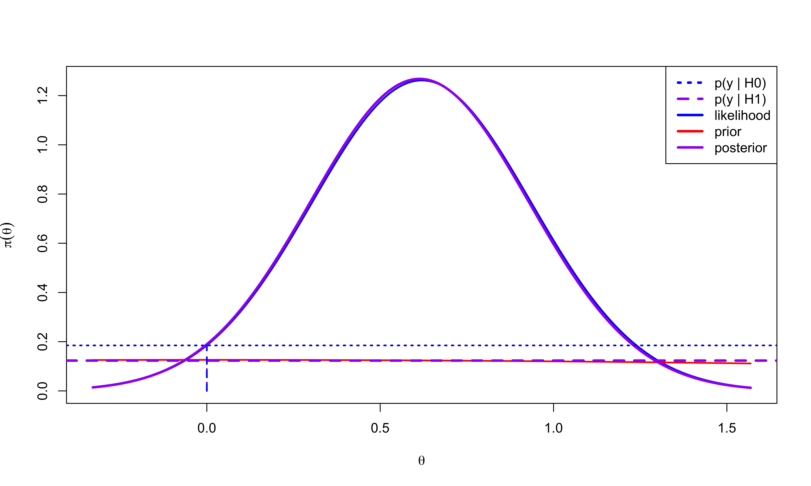
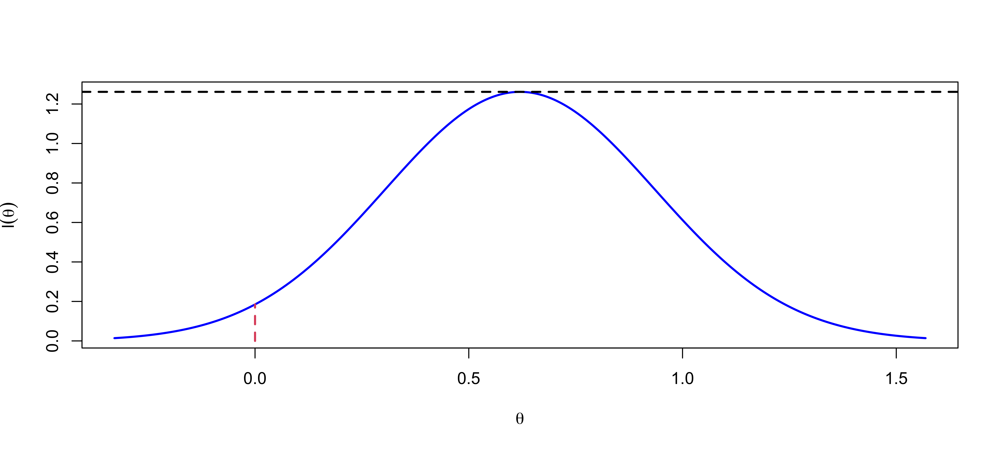
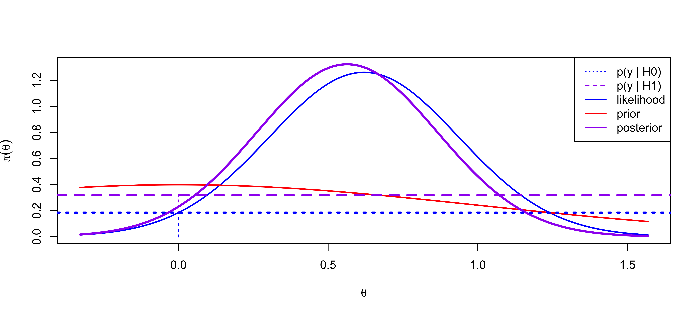
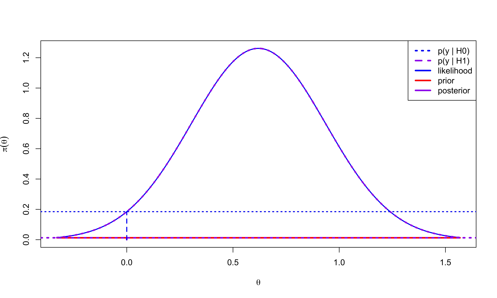

Basics of Bayesian Hypothesis Testing
STA 721: Lecture 16
Merlise Clyde (clyde@duke.edu)
Duke University
Outline
Confidence Interverals from Test Statistics
Pivotal Quantities
Confidence intervals for parameters
Prediction Intervals
Bayesian Credible Regions and Intervals
Readings:
- Christensen Appendix C, Chapter 3
Feature Selection via Shrinkage
modal estimates in regression models under certain shrinkage priors will set a subset of coefficients to zero
not true with posterior mean
multi-modal posterior
no prior probability that coefficient is zero
how should we approach selection/hypothesis testing?
Bayesian Hypothesis Testing
Basics of Bayesian Hypothesis Testing
Suppose we have univariate data \(Y_i \overset{iid}{\sim} \textsf{N}(\theta, 1)\), \(\mathbf{Y}= (y_i, \ldots, y_n)^T\)
goal is to test \(\mathcal{H}_0: \theta = 0; \ \ \text{vs } \mathcal{H}_1: \theta \neq 0\)
Additional unknowns are \(\mathcal{H}_0\) and \(\mathcal{H}_1\)
Put a prior on the actual hypotheses/models, that is, on \(\pi(\mathcal{H}_0) = \Pr(\mathcal{H}_0 = \text{True})\) and \(\pi(\mathcal{H}_1) = \Pr(\mathcal{H}_1 = \text{True})\).
(Marginal) Likelihood of the hypotheses: \(\cal{L}(\mathcal{H}_i) \propto p( \mathbf{y}\mid \mathcal{H}_i)\)
\[p( \mathbf{y}\mid \mathcal{H}_0) = \prod_{i = 1}^n (2 \pi)^{-1/2} \exp{- \frac{1}{2} (y_i - 0)^2}\]
\[p( \mathbf{y}\mid \mathcal{H}_1) = \int_\Theta p( \mathbf{y}\mid \mathcal{H}_1, \theta) p(\theta \mid \mathcal{H}_1) \, d\theta\]
Bayesian Approach
Need priors distributions on parameters under each hypothesis
- in our simple normal model, the only additional unknown parameter is \(\theta\)
- under \(\mathcal{H}_0\), \(\theta = 0\) with probability 1
- under \(\mathcal{H}_0\), \(\theta \in \mathbb{R}\) we could take \(\pi(\theta) = \mathcal{N}(\theta_0, 1/\tau_0^2)\).
Compute marginal likelihoods for each hypothesis, that is, \(\cal{L}(\mathcal{H}_0)\) and \(\cal{L}(\mathcal{H}_1)\).
Obtain posterior probabilities of \(\cal{H}_0\) and \(\cal{H}_1\) via Bayes Theorem. \[ \begin{split} \pi(\mathcal{H}_1 \mid \mathbf{y}) = \frac{ p( \mathbf{y}\mid \mathcal{H}_1) \pi(\mathcal{H}_1) }{ p( \mathbf{y}\mid \mathcal{H}_0) \pi(\mathcal{H}_0) + p( \mathbf{y}\mid \mathcal{H}_1) \pi(\mathcal{H}_1)} \end{split} \]
Provides a joint posterior distribution for \(\theta\) and \(\mathcal{H}_i\): \(p(\theta \mid \mathcal{H}_i, \mathbf{y})\) and \(\pi(\mathcal{H}_i \mid \mathbf{y})\)
Hypothesis Tests via Decision Theory
Loss function for hypothesis testing
\(\hat{\cal{H}}\) is the chosen hypothesis
\(\cal{H}_{\text{true}}\) is the true hypothesis, \(\cal{H}\) for short
Two types of errors:
Type I error: \(\hat{\cal{H}} = 1\) and \(\cal{H} = 0\)
Type II error: \(\hat{\cal{H}} = 0\) and \(\cal{H} = 1\)
Loss function: \[L(\hat{\cal{H}}, \cal{H}) = w_1 \, 1(\hat{\cal{H}} = 1, \cal{H} = 0) + w_2 \, 1(\hat{\cal{H}} = 0, \cal{H} = 1)\]
\(w_1\) weights how bad it is to make a Type I error
\(w_2\) weights how bad it is to make a Type II error
Loss Function Functions and Decisions
Relative weights \(w = w_2/w_1\) \[L(\hat{\cal{H}}, \cal{H}) = \, 1(\hat{\cal{H}} = 1, \cal{H} = 0) + w \, 1(\hat{\cal{H}} = 0, \cal{H} = 1)\]
Special case \(w=1\) \[L(\hat{\cal{H}}, \cal{H}) = 1(\hat{\cal{H}} \neq \cal{H})\]
known as 0-1 loss (most common)
Bayes Risk (Posterior Expected Loss) \[\textsf{E}_{\cal{H} \mid \mathbf{y}}[L(\hat{\cal{H}}, \cal{H}) ] = 1(\hat{\cal{H}} = 1)\pi(\cal{H}_0 \mid \mathbf{y}) + 1(\hat{\cal{H}} = 0) \pi(\cal{H}_1 \mid \mathbf{y})\]
Minimize loss by picking hypothesis with the highest posterior probability
Bayesian hypothesis testing
Using Bayes theorem, \[ \begin{split} \pi(\mathcal{H}_1 \mid \mathbf{y}) = \frac{ p( \mathbf{y}\mid \mathcal{H}_1) \pi(\mathcal{H}_1) }{ p( \mathbf{y}\mid \mathcal{H}_0) \pi(\mathcal{H}_0) + p( \mathbf{y}\mid \mathcal{H}_1) \pi(\mathcal{H}_1)}, \end{split} \]
If \(\pi(\mathcal{H}_0) = 0.5\) and \(\pi(\mathcal{H}_1) = 0.5\) a priori, then \[ \begin{split} \pi(\mathcal{H}_1 \mid \mathbf{y}) & = \frac{ 0.5 p( \mathbf{y}\mid \mathcal{H}_1) }{ 0.5 p( \mathbf{y}\mid \mathcal{H}_0) + 0.5 p( \mathbf{y}\mid \mathcal{H}_1) } \\ \\ & = \frac{ p( \mathbf{y}\mid \mathcal{H}_1) }{ p( \mathbf{y}\mid \mathcal{H}_0) + p( \mathbf{y}\mid \mathcal{H}_1) }= \frac{ 1 }{ \frac{p( \mathbf{y}\mid \mathcal{H}_0)}{p( \mathbf{y}\mid \mathcal{H}_1)} + 1 }\\ \end{split} \]
Bayes factors
The ratio \(\frac{p( \mathbf{y}\mid \mathcal{H}_0)}{p( \mathbf{y}\mid \mathcal{H}_1)}\) is a ratio of marginal likelihoods and is known as the Bayes factor in favor of \(\mathcal{H}_0\), written as \(\mathcal{BF}_{01}\). Similarly, we can compute \(\mathcal{BF}_{10}\) via the inverse ratio.
Bayes factors provide a weight of evidence in the data in favor of one model over another. and are used as an alternative to the frequentist p-value.
Rule of Thumb: \(\mathcal{BF}_{01} > 10\) is strong evidence for \(\mathcal{H}_0\); \(\mathcal{BF}_{01} > 100\) is decisive evidence for \(\mathcal{H}_0\). (Kass & Raftery 1995 JASA)
In the example (with equal prior probabilities), \[ \begin{split} \pi(\mathcal{H}_1 \mid \mathbf{y}) = \frac{ 1 }{ \frac{p( \mathbf{y}\mid \mathcal{H}_0)}{p( \mathbf{y}\mid \mathcal{H}_1)} + 1 } = \frac{ 1 }{ \mathcal{BF}_{01} + 1 } \\ \end{split} \]
the higher the value of \(\mathcal{BF}_{01}\), that is, the weight of evidence in the data in favor of \(\mathcal{H}_0\), the lower the marginal posterior probability that \(\mathcal{H}_1\) is true.
\(\mathcal{BF}_{01} \uparrow\), \(\pi(\mathcal{H}_1 \mid \mathbf{y}) \downarrow\).
Posterior Odds and Bayes Factors
Posterior odds \(\frac{\pi(\mathcal{H}_0 \mid \mathbf{y})}{\pi(\mathcal{H}_1 \mid \mathbf{y})}\) \[ \begin{split} \frac{\pi(\mathcal{H}_0 | \mathbf{y})}{\pi(\mathcal{H}_1 | \mathbf{y})} & = \frac{ p( \mathbf{y}|\mathcal{H}_0) \pi(\mathcal{H}_0) }{ p( \mathbf{y}| \mathcal{H}_0) \pi(\mathcal{H}_0) + p( \mathbf{y}| \mathcal{H}_1) \pi(\mathcal{H}_1)} \div \frac{ p( \mathbf{y}| \mathcal{H}_1) \pi(\mathcal{H}_1) }{ p( \mathbf{y}\mathcal{H}_0) \pi(\mathcal{H}_0) + p( \mathbf{y}| \mathcal{H}_1) \pi(\mathcal{H}_1)}\\ \\ & = \frac{ p( \mathbf{y}| \mathcal{H}_0) \pi(\mathcal{H}_0) }{ p( \mathbf{y}| \mathcal{H}_0) \pi(\mathcal{H}_0) + p( \mathbf{y}| \mathcal{H}_1) \pi(\mathcal{H}_1)} \times \frac{ p( \mathbf{y}| \mathcal{H}_0) \pi(\mathcal{H}_0) + p( \mathbf{y}| \mathcal{H}_1) \pi(\mathcal{H}_1)}{ p( \mathbf{y}| \mathcal{H}_1) \pi(\mathcal{H}_1) }\\ \\ \therefore \underbrace{\frac{\pi(\mathcal{H}_0 \mid \mathbf{y})}{\pi(\mathcal{H}_1 \mid \mathbf{y})}}_{\text{posterior odds}} & = \underbrace{\frac{ \pi(\mathcal{H}_0) }{ \pi(\mathcal{H}_1) }}_{\text{prior odds}} \times \underbrace{\frac{ p( \mathbf{y}\mid \mathcal{H}_0) }{ p( \mathbf{y}\mid \mathcal{H}_1) }}_{\text{Bayes factor } \mathcal{BF}_{01}} \\ \end{split} \]
The Bayes factor can be thought of as the factor by which our prior odds change (towards the posterior odds) in the light of the data.
Likelihoods & Evidence
Maximized Likelihood. \(n = 10\)
p-value = 0.05
Marginal Likelihoods & Evidence
Maximized & Marginal Likelihoods
\(\cal{BF}_{10}\) = 1.73 or \(\cal{BF}_{01}\) = 0.58
Posterior Probability of \(\cal{H}_0\) = 0.3665
Candidate’s Formula (Besag 1989)
Alternative expression for BF based on Candidate’s Formula or Savage-Dickey ratio \[\cal{BF}_{01} = \frac{p( \mathbf{y}\mid \cal{H}_0)} {p( \mathbf{y}\mid \cal{H}_1)} = \frac{\pi_\theta(0 \mid \cal{H}_1, \mathbf{y})} {\pi_\theta(0 \mid \cal{H}_1)}\]
\[\pi_\theta(\theta \mid \cal{H}_i, \mathbf{y}) = \frac{p(\mathbf{y}\mid \theta, \cal{H}_i) \pi(\theta \mid \cal{H}_i)} {p(\mathbf{y}\mid \cal{H}_i)} \Rightarrow p(\mathbf{y}\mid \cal{H}_i) = \frac{p(\mathbf{y}\mid \theta, \cal{H}_i) \pi(\theta \mid \cal{H}_i)} {\pi_\theta(\theta \mid \cal{H}_i, \mathbf{y})}\]
\[\cal{BF}_{01} = \frac{\frac{p(\mathbf{y}\mid \theta, \cal{H}_0) \pi(\theta \mid \cal{H}_0)} {\pi_\theta(\theta \mid \cal{H}_0, \mathbf{y})} } { \frac{p(\mathbf{y}\mid \theta, \cal{H}_1) \pi(\theta \mid \cal{H}_1)} {\pi_\theta(\theta \mid \cal{H}_1, \mathbf{y})}} = \frac{\frac{p(\mathbf{y}\mid \theta = 0) \delta_0(\theta)} {\delta_0(\theta)} } { \frac{p(\mathbf{y}\mid \theta, \cal{H}_1) \pi(\theta \mid \cal{H}_1)} {\pi_\theta(\theta \mid \cal{H}_1, \mathbf{y})}} = \frac{p(\mathbf{y}\mid \theta = 0)}{p(\mathbf{y}\mid \theta, \cal{H}_1)} \frac{\delta_0(\theta)} {\delta_0(\theta)} \frac{\pi_\theta(\theta \mid \cal{H}_1, \mathbf{y})}{\pi(\theta \mid \cal{H}_1)} \]
- Simplifies to the ratio of the posterior to prior densities when evaluated \(\theta\) at zero
Prior
Plots were based on a \(\theta \mid \cal{H}_1 \sim \textsf{N}(0, 1)\)
centered at value for \(\theta\) under \(\cal{H}_0\) (goes back to Jeffreys)
“unit information prior” equivalent to a prior sample size is 1
is this a “reasonable prior”?
What happens if \(n \to \infty\)?
What happens of \(\tau_0 \to 0\) ? (less informative)
Choice of Precision
\(\tau_0 = 1/10\)
Bayes Factor for \(\cal{H}_0\) to \(\cal{H}_1\) is \(1.5\)
Posterior Probability of \(\cal{H}_0\) = 0.6001

\(\tau_0 = 1/1000\)
Bayes Factor for \(\cal{H}_0\) to \(\cal{H}_1\) is \(14.65\)
Posterior Probability of \(\cal{H}_0\) = 0.9361
Vague Priors & Hypothesis Testing
As \(\tau_0 \to 0\) the \(\cal{BF}_{01} \to \infty\) and \(\Pr(\cal{H}_0 \mid \mathbf{y}\to 1\)!
As we use a less & less informative prior for \(\theta\) under \(\cal{H}_1\) we obtain more & more evidence for \(\cal{H}_0\) over \(\cal{H}_1\)!
Known as Bartlett’s Paradox - the paradox is that a seemingly non-informative prior for \(\theta\) is very informative about \(\cal{H}\)!
General problem with nested sequence of models. If we choose vague priors on the additional parameter in the larger model we will be favoring the smaller models under consideration!
Similar phenomenon with increasing sample size (Lindley’s Paradox)
Bottom Line Don’t use vague priors!
What should we use then?
Other Options
Place a prior on \(\tau_0\) \[\tau_0 \sim \textsf{Gamma}(1/2, 1/2)\]
If \(\theta \mid \tau_0, \cal{H}_1 \sim \textsf{N}(0, 1/\tau_0)\), then \(\theta_0 \mid \cal{H}_1\) has a \(\textsf{Cauchy}(0,1)\) distribution! Recommended by Jeffreys (1961)
no closed form expressions for marginal likelihood!
can use Numerical Integration (a one dimensional integral) to estimate the marginal likelihood under \(\cal{H}_1\)
Intrinsic Bayes Factors & Priors (Berger & Pericchi)
Can’t use improper priors under \(\cal{H}_1\)
use part of the data \(y(l)\) to update an improper prior on \(\theta\) to get a proper posterior \(\pi(\theta \mid \cal{H}_i, y(l))\)
use \(\pi(\theta \mid y(l), \cal{H}_i)\) to obtain the posterior for \(\theta\) based on the rest of the training data
Calculate a Bayes Factor (avoids arbitrary normalizing constants!)
Choice of training sample \(y(l)\)?
Berger & Pericchi (1996) propose “averaging” over training samples intrinsic Bayes Factors
intrinsic prior on \(\theta\) given \(\cal{H}_1\) in model \(\mathbf{Y}\mid \theta \sim \textsf{N}(\theta, \sigma^2)\) \[ \pi(\theta \mid \sigma^2) = \frac{1 - \exp[-\theta^2/\sigma^2]}{2 \sqrt{\pi} \theta^2\sigma} \] leads to the Intrisic Bayes Factor